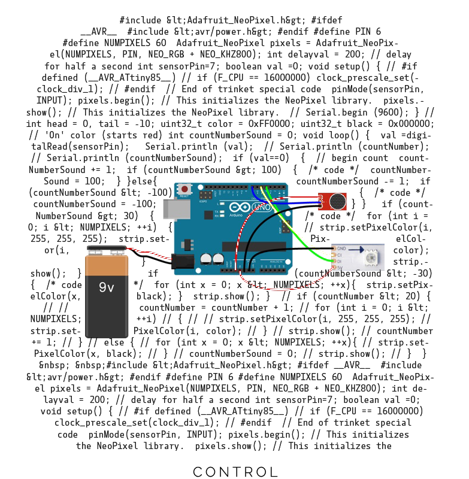
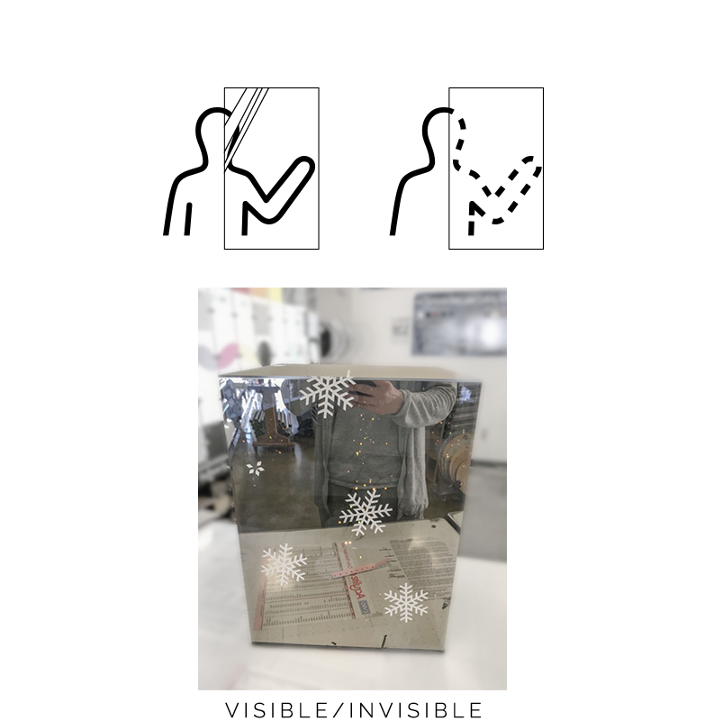

Avatar
We were asked for an exhibition design for California Academy of Sciences. I created several interactive devices and video around the topic of disconnection in a connected world. With interactive deices, I invited audience to act as the physical world avatar. And used the video to discuss the situation of the filter effect on digital media. In the end, I formed them into web formate.
Roles
Web Designer
Exhibitor
Deliverables
Website
Wearable device
Speculative design
Tools
HTML,CSS,JS
Arduino
Premiere
Time
five weeks
"We shape our tools and
- Marshall McLuhan
thereafter our tools shape us."
Exhibition
Avatars, the head imagines used on social medias, lead to my thinking of how the enormous photos, images, videos, which captured phenomenal expression at disconnected moment. To discuss this digitalizing effect, I used the circle head image as reference and made Avatar helmets for the CAS exhibition, which blend the edge between digital and physical appearance.


{kind=link}
{kind=link}
{kind=link}
{kind=link}
{kind=link}
{kind=link}
Website Live
After the questioning and discussion with series of cyborg prototypes, I thought about how to bring audience into this topic rather than just a cool intractable led helmet on an exhibition. I made a website to present these the discussion about the disconnection in connected world. I divided the story into four sections: research, influence, experiment, and investigation. And used several little interactive moments to bring audience into the scenes behind the exhibition.
Cyborg Interaction Process
Quick Cyborgs
Decisions
If there is no button, this function does not exist. Similarly in social media, which is a human-machine-human system, if you don’t make sound, you don’t exist. Real-life activities that do not have an online correlate begin to atrophy, or cease to be relevant.
Cyborg #1

Kuuki Yomenai
(read the air)
To convey a clear idea through text and images is a professional skill, not to mention the limited number of text on social media. We use icon, emoji, words to push the limitation of expression. But they inevitable distort the original.
Cyborg #2
Body Talk
In digital world, the contexts are meta data, text, image, which have already went thought the process of selection and edition. Therefore, we only have access to the section of the reality through digital media.
Cyborg #3

Interactive device goal
A head-mounted device can be used to
- frame avatar
- show illusion or distorted appearance
- enable user control the connections with people around
- let the user play and excite their interactions.
- 

- 
Control
Use sound sensor to turn on the LED, which gives users an intuitive way of controlling.
Visible/Invisible
Double-side mirror film acts as an on and off switch. Meanwhile, its reflection effect intensify the illusion.
Illusion
To give facial expression a continually change, I used the light shading in different directions.
Prototype Experiment
Through bucket test, I found the possibilities in the interactions, and refined them through iteration.
interact with others
The users don’t have desires to start the interaction.
To create a context for communication. I use the other helmets as a companies.
Distractive light effect
The bare led light and wires distract user’s attention.
To prevent that, I add a light-blocking layer and refine the connections.
trigger becomes sluggish
The low voltage batteries make the sound trigger unstable. So I changed to more stable power bank and prepared backup batteries just in case.
light effect looks subtle
The mirror reflects that LED light, which reduces the shading effect. Adding a light-blocking layer and put light closer to face solved the problem.
Exhibition at CAS Night Life
At 2017, these interactive helmets were presented on Nightlife event at the California Academy of Sciences. From the mass feedback of exhibition, I verified and studied the original hypothesis to get more comprehensive understanding of this topic.
I thought the distorted illusions of people’s appearance are is fake identities, which people can’t build connection with. But people actually had tones of fun with them. Emerged in the entertaining environment, users loved acting as a character rather than themself to *fit in the playful atmosphere*.
I assumed users like to constantly talking to keep the light on to enable others to see them. But it turned out they had more time hiding their face behind the mirror and isolated from others. The helmet worked as a private space, similar to sunglasses providing a sense of safety in public.